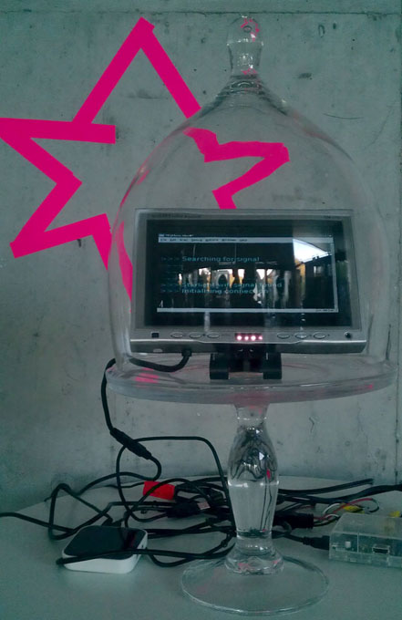

Nancy Mauro-Flude's explores how we articulate the resonances and dissonances between performing arts and computer science, usually within the context of the contemporary art. She has devised, curated and developed numerous experimental cross-disciplinary artworks, durational events, and pedagogical programmes that examine how networked systems, embodiment and emergent technologies manifest in contemporary culture at: Waag Society: institute for art, science and technology, Museum of New and Old Art (MONA), Transmediale, What the Hack, FILE, International Symposium on Electronic Art and so on.. She is an advocate of Free and Open Source Software and is a supporter of, and contributor to, initiatives that promote and reinforce freedom in the networked domain. Under various pseudonyms she actively works to fuse radical forms of open culture with educational and social structures, with particular focus upon relatively conservative and weakly networked regions. She is the international currency officer for Dyne - free software foundry and developer for the Genderchangers Academy; movements that actively change the ‘gender’ of technology. She was recently appointed as Assistant Professor in the Communications and New Media Department, National University Singapore.
Divination is a new networked performance. The maiden voyage – set sail for the duration of June 2016 -the Museum of New and old art –festival Dark Mofo. Divination - traditionally a method of visualising the unseen - highlights the ease of access to so-called ‘private data’ and offers an alternative view of the information we transmit on a daily basis. Audiences were chaperoned by human and non-human agents (that is, ‘chatbots’) called Pirate Girls, through an energetic collision of nautical mythology, computer culture and transgressive fiction.
The performance lecture will focus upon how the performance explores our relationship with mysterious or communal forces and how they relate to 21C mass electronic surveillance programs. The audience' [remote or local] are invited to think about the delphic relationship you may have with networks, signals, codes and other things you can not fully comprehend, but may opt in to. The modern Pyrate Queen, was not asking for gold to attend - but the audience’s data for the crew’s collective treasure chest - in order to steer the artwork. After opting in – audience experience network hauntings by Pirate girls who observe and act performatively to highlight how technical agents within networked systems have become increasingly inconspicuous.
Awry Signals: A Eulogy for the Stellar [Girls] is code séance performance installation, a device to tap into a starlight WIFI beam in order to receive messages from the three stellar punks now making their way along it to the heavens; they shine up the cathedrals of light in the night sky.
Awry Signals: A Eulogy for the Stellar [Girls] is an homage to the radical lives of three great women who are all recently deceased: Ari Up of the Slits (1962–2010), Poly Styrene of X-Ray Spex (1957–2011), and Chrissy Amphlett of the Divinyls (1959–2013).

We propose this to be a radical network with voices from beyond | Dead stars go to the stars | text based séance | warnings / advice from these banshees via starlight wifi network.
The work is driven by starlight network (astero seismology, lux); the pulsations of a star’s data give rhythm to the work. We pick up Internet data via WI-FI about the position of Alpha Centauri. The programming language Python is used to manipulate this and the text, we use a rasberry pi and a small monitor.
The work predominantly is speaks to Chrissy, Ari and Poly, about their travel out to the heavens, and the vibrations that they have left with us, their lyrics resonating on the earthly plane as cut ups, forming a series of satirical aphorisms. A table of phrases is gleaned from the women’s lyrics; then by matching these phrases, the output on the screen, allows conversations between the three dead girls to continue. The text that appears on-screen is a key element of the work.
In some belief systems it is said that deceased warriors first disappear beyond all visible horizons and then reappear in the firmament as multitudinous star clusters. Some of the stars nearest to earth are in Alpha Centauri, a binary system composed of Alpha Centauri A and B, close to a third star, Proxima Centauri. Alpha Centauri is 4.3650 light-years away, while Proxima Centauri is 4.241 light-years away. We need this level of detail because we can see how in the firmament the past is visible in the light of the stars and the present is delayed by distance. Light transmission comes to us at 300,000 kilometres per second, traversing the cosmos to show us something that once was, but is no longer a living reality. Recent years have seen the deaths of these three great women who have inspired us during their lives: Ari Up of the Slits (deceased October 2010), Poly Styrene of X-Ray Spex (deceased April 2011), and Chrissy Amphlett of the Divinyls (deceased April 2013). Therefore, it is our calculation that some of the light we see in the night sky comes to us from a time when all three were still alive. A direct beam of starlight Wi-Fi is now passing back through their last days, deaths and afterlives.